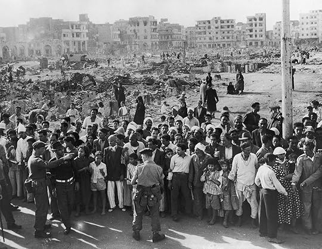

The Thief and The Dogs by Naguib Mahfouz
Naguib Mahfouz’s The Thief and The Dogs is a novel that explores themes of betrayal, societal change, and human misery. The story follows the main character, Said Mahran, upon his release from prison. He finds himself completely abandoned by the world he once knew. Everything has changed before he even realizes it — his wife and former servant-turned-student are now together, his two-year-old daughter doesn’t even know he exists, and the man he once adored as a mentor, Rauf Ilwan, has completely abandoned the ideals he once preached. The novel is a deep look into a man whose world has crumbled and whose need for vengeance blinds him to the only thing he has left.
The Betrayal of Ideals & Class Struggle
One of the most powerful themes in this novel, in my opinion, is the class struggle in Said’s relationship with Rauf Ilwan. Said’s time in prison, Rauf was a journalist who preached socialist ideals and fought for the rights of the poor. In Said’s words, he was a “figure of hope.” Rauf was someone who understood the needs of the working class. However, upon Said’s return from prison, he discovers that Rauf has abandoned his beliefs completely and is now an elite figure benefiting from the very corrupt system he once fought against. This entire scene isn’t just a personal betrayal—it reflects a real-world problem. It highlights a major concern within Marxist theory: how revolutionaries, once attaining power, often become the very oppressors they once stood against.
Rauf’s rejection of Said is one of the most significant moments in the book. It represents not just the collapse of an idea that once gave Said purpose, but also the collapse of the last thing he had left in his life.
Another example of class struggle in the novel is how the media plays a role in oppression. A prime example is Rauf Ilwan’s transformation from a journalist who wanted to help the working class into a wealthy, highly established figure. This is a perfect example of how the media can be co-opted by the ruling class. Rather than continuing to fight for the people who need it, Rauf now uses his massive influence to serve the existing power structure. He doesn’t challenge oppression — he becomes a tool of it.
Philosophy in The Thief and The Dogs
In my opinion, The Thief and The Dogs is a book about existential thought. Said’s return to the world he once knew is met with an overwhelming sense of the unknown. The world has moved on without him — his home, his family, and all of his ideals are now relics of the past. (The book takes place during the 1952 Egyptian Revolution, which is a whole other discussion in itself.) I would argue that his attempts at revenge on those who changed his life aren’t about achieving justice, but instead about clinging to some sense of meaning. Said fights against the absurdity of his existence, but his failure to adapt ultimately leaves him with nothing.
Fatalism is a huge theme in this book. Said is doomed from the start — no matter what he does, he can’t change his fate. While everyone around him is either able or forced to adapt to their surroundings in order to survive, he clings to his outdated notions of honor and revenge. His downfall doesn’t come from external forces but rather from his inability to change.
Nur, on the other hand, understands how to navigate the harsh realities of society, while Said remains trapped in an illusion of his past. Throughout the novel, he still believes he’s a thief fighting for justice, but in reality, he isn’t helping anyone—not even himself.
A Photo From the 1952 Egyptian Revolution Coup D'état
"If I could live without a past, ignoring Nabawiyya, Llish, and Rauf, I'd be revealed of a great weight, a burden; I'd feel readier to secure an easy life and a lot further from the rope. But unless I settle my account with them, life will have no taste, because I shall not forget the past." - Naguib Mahfouz